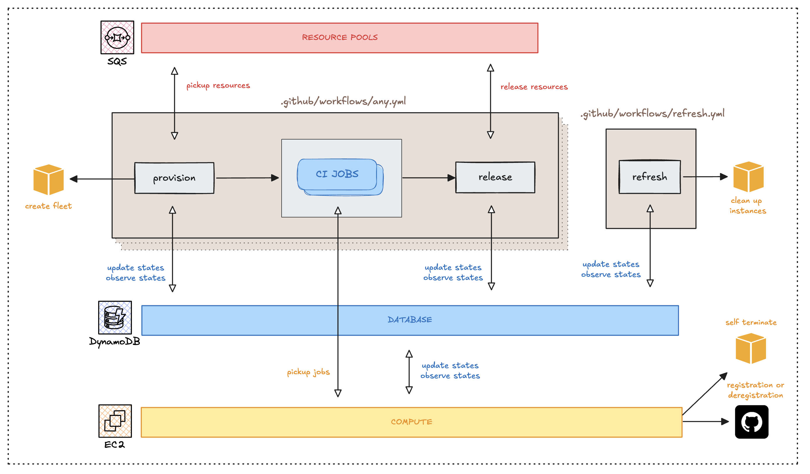
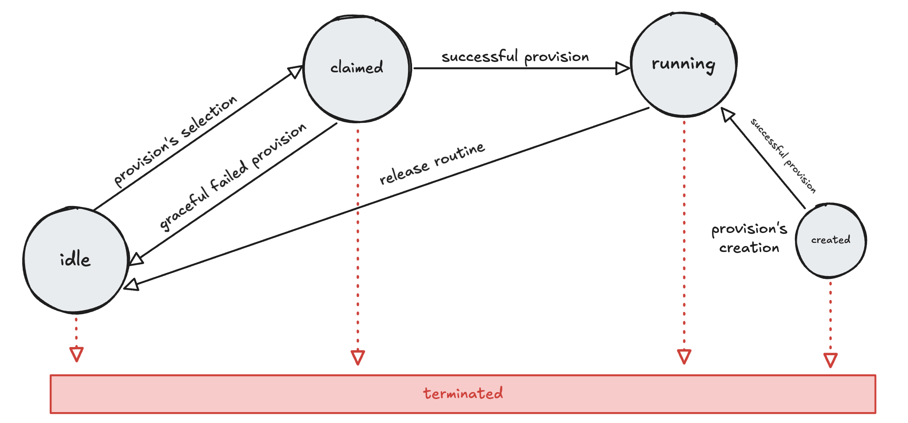

Detailed Design
Detailed Architecture Overview
Below is the detailed architecture diagram showcasing all components:

The core components in more detail:
- Controlplane: Orchestrates instance management via distinct operational modes.
- Resource Pool (SQS Queue): Manages idle instances ready for reuse.
- Central State Store (DynamoDB): Maintains current instance state, signaling indirectly between controlplane and instances.
- Instances/Runners: EC2 machines executing the actual CI jobs.
Core Concepts Expanded
Controlplane Operational Modes
The controlplane operates in three distinct modes:
- Provision: Acquires EC2 resources either by claiming from the resource pool or provisioning new instances.
- Release: Returns instances to the resource pool after workflows complete, resetting instance state.
- Refresh: Periodically validates instance health and lifecycle thresholds, initiating termination of unhealthy or expired instances.
Controlplane modes visualized
graph TD
A[Workflow Starts ⚡️] --> B(Provision Mode);
B --> C[Instance Ready for CI];
D[Workflow Completes ⚡️] --> E(Release Mode);
E --> F[Instance Returned to Pool];
G[Manual 👈/Cron ⏱️] --> H(Refresh Mode);
H --> I[Initialization/Maintenance];These modes interact through a shared state mechanism stored in DynamoDB, enabling indirect signaling between runners and the controlplane.
Instances and Runners
EC2 Instances (as self-hosted runners) are dynamically managed resources executing CI workflows. They maintain minimal agents installed at instance startup for:
- Initializing runner environments via custom scripts (
pre-runner-script). - Registering and deregistering with GitHub Actions runner APIs.
- Sending periodic health signals (heartbeats) to the shared state store.
- Observing state changes (e.g. runId assignments) for timely registration.
Instance States and Transition Mechanisms
Each instance has a clearly defined lifecycle managed through distinct states stored in DynamoDB:
| State | Technical Definition |
|---|---|
| created | Instance created; initialization pending (waiting on runner registration & scripts). |
| running | Runner initialized and actively accepting CI jobs. |
| idle | Instance healthy and available in the resource pool for reuse. |
| claimed | Instance reserved by a workflow, undergoing final validation checks. |
| terminated | Instance terminated following expiration, unhealthy status, or explicit shutdown. |
These states allow the controlplane to track and manage instances seamlessly.
Detailed State Transition Diagram

The transitions between states are triggered by specific events in the system:
| From State | To State | Triggering Event |
|---|---|---|
created |
running |
The instance agent successfully initializes and registers. |
running |
idle |
The workflow completes, and the release process begins. |
idle |
claimed |
The provision process selects the instance from the pool for a new workflow. |
claimed |
idle |
The instance fails a health/registration check after being claimed and is returned to the pool. |
(any) |
terminated |
The instance's threshold and is transitioned by the refresh process. |
This state management gives the controlplane ability to reuse runners effectively and terminate them automatically when no longer viable.
Lifecycle of an Instance
To understand how these components and concepts work together, read our End-to-End Lifecycle Walkthrough.
Technical Deep Dives
For a detailed exploration of individual components, their challenges, and solutions, see:
- Provision: Instance reuse/creation, selection logic, resource matching, and AWS API interactions.
- Release: Safe instance deregistration and resource pool placement.
- Refresh: Controlplane initialization, maintenance, and periodic checks for safe termination of long-running instances.
- Resource Pool: SQS-backed resource pool, message structure, and producer/consumer roles.
- Instance Initialization: Instance agent managing startup, GitHub registration/deregistration loop, heartbeats, and safe self-termination.